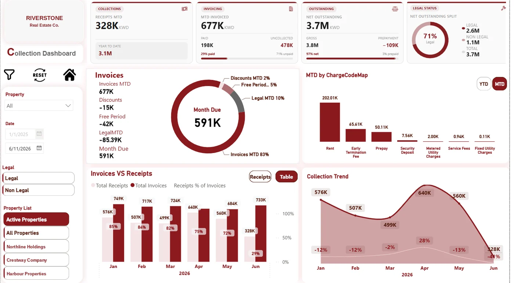

Collections & Receivables Control
Power BI · DAXMonth-to-date collections, invoicing and net outstanding in a single executive view — with aging splits, charge-code breakdowns and an invoices-versus-receipts trend that shows finance exactly where cash is stalling.